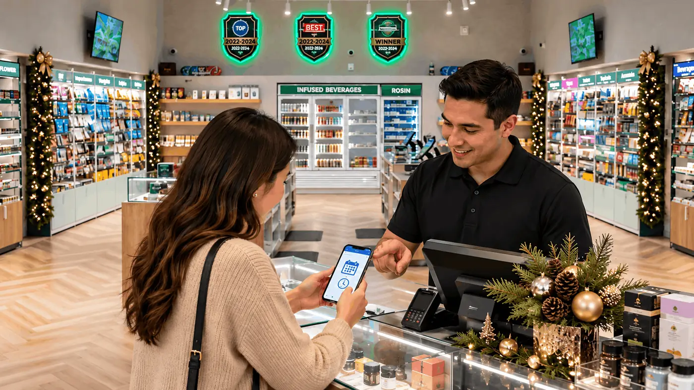

Where Can You Check San Diego Dispensary Holiday Hours Before Visiting?
November 2, 2026 · 9 min read

The holidays are busy enough without arriving at a dispensary only to discover the doors are closed.
Whether you’re planning a stop before Thanksgiving dinner, checking store availability around Christmas, or organizing errands on New Year’s Day, knowing where to find accurate San Diego Dispensary Holiday Hours can save you an unnecessary trip.
Here’s the catch: Regular business hours don’t always apply during holidays.
Some dispensaries may open later, close earlier, or adjust their schedules entirely. And just because one location is open doesn’t mean every store in the same retail network follows identical hours.
That’s why checking the right sources matters.
This guide explains where to find San Diego Dispensary Holiday Hours, how to verify schedules for individual Wellgreens locations, and what to know before visiting a licensed cannabis retailer during a busy holiday period.
Detailed Breakdown
1. Why Do San Diego Dispensary Holiday Hours Change?
2. Start With the Official Wellgreens Website
3. Review Wellgreens Dispensary Locations Individually
4. Check the Wellgreens Pacific Beach Location
5. Verify the Wellgreens Mission Valley Schedule
6. Confirm Hours for Wellgreens City Heights
7. Which Holidays Should You Double-Check?
8. Can You Trust Google Maps for Holiday Hours?
9. What Should First-Time Dispensary Visitors Know?
10. How Can You Confirm Holiday Hours Directly?
Key Takeaways
FAQs
TL;DR: Quick Guide
Need to check San Diego Dispensary Holiday Hours? Start here:
Check the Official Website: Visit the dispensary’s website for location details and any published holiday schedule updates.
Review Individual Store Pages: Holiday hours may vary by location, even within the same retail network.
Contact the Store Directly: When holiday hours aren’t clearly listed, ask the retailer to confirm its schedule.
Double-Check Map Listings: Google Maps and similar platforms can provide useful information, but special hours may be outdated or unverified.
Plan Around Major Holidays: Thanksgiving, Christmas, New Year’s Day, and other holidays may involve adjusted operating hours.
Verify Before Traveling: Confirm hours close to your planned visit rather than relying on an old listing.
Check Product Availability Separately: An open store doesn’t guarantee that a specific product is in stock.
Bring Valid Identification: California adult-use cannabis purchases generally require customers to be at least 21 years old with acceptable identification.
Allow Extra Time: Holiday shopping periods can bring longer lines and changes in store operations.
Bottom line: The most reliable approach is to check the specific dispensary’s official location page and contact the store if its holiday schedule isn’t confirmed.
Detailed Breakdown

1. Why Do San Diego Dispensary Holiday Hours Change?
Holiday schedules aren’t always the same as regular business hours.
Like other retailers, cannabis dispensaries may adjust operations based on staffing, customer demand, local requirements, and business decisions.
Potential schedule changes include:
Earlier closing times.
Later opening times.
Reduced operating hours.
Full-day closures.
Different schedules for individual locations.
Changes to pickup or delivery availability.
A dispensary that’s normally open during a particular time window may follow a different schedule on a major holiday.
That makes San Diego Dispensary Holiday Hours worth verifying, especially when you’re planning a time-sensitive visit.
Important: Don’t assume that a store is open or closed on a specific holiday unless the retailer has confirmed its schedule.

2. Start With the Official Wellgreens Website
The first place to check is the retailer’s own website.
Wellgreens provides information about its cannabis retail operations, products, and San Diego-area locations.
An official website is a useful starting point because it can direct you to individual store pages and customer support information.
When checking for holiday hours, look for:
Location-specific business hours.
Special holiday announcements.
Notices about temporary closures.
Updates to store services.
Contact details for schedule confirmation.
If you don’t see a holiday announcement, don’t automatically assume the regular schedule applies.
A store may not have published its special hours yet.
Best practice: Check the website first, then confirm directly when the holiday schedule remains unclear.
3. Review Wellgreens Dispensary Locations Individually
One of the easiest mistakes is assuming every dispensary in a retail network follows the same holiday schedule.
Different locations may have different staffing arrangements, operating hours, and local considerations.
The Wellgreens dispensary locations directory is a useful place to find individual store information.
When reviewing the directory, identify the location you actually plan to visit.
Then check:
The store’s address.
Regular business hours.
Any published holiday changes.
Available contact options.
Store-specific announcements.
This matters if you’re comparing multiple locations in the San Diego area.
A schedule posted for one branch shouldn’t be treated as confirmation for another.
Quick tip: Save the page for your preferred location so you can check it again before leaving home.

4. Check the Wellgreens Pacific Beach Location
Planning a dispensary visit around Pacific Beach?
Start with the official Wellgreens Pacific Beach dispensary page for the De Soto Street location.
Pacific Beach can be busy during weekends and holiday periods, making schedule confirmation especially useful when planning errands.
Before visiting, verify:
Whether the location will operate on the holiday.
Its opening and closing times.
Whether any special hours are listed.
Whether your preferred shopping service is available.
Whether the product you’re researching is currently listed.
Avoid assuming that regular hours apply just because the store appears on a map.
Holiday schedules can change independently of standard weekly hours.
If you’re visiting from another neighborhood, a quick confirmation can prevent an unnecessary drive.
5. Verify the Wellgreens Mission Valley Schedule
Mission Valley is another area where customers may want to coordinate dispensary visits with shopping, dining, or other errands.
For location-specific information, review the Wellgreens Mission Valley dispensary page on Camino Del Rio South.
When checking San Diego Dispensary Holiday Hours for Mission Valley, pay attention to the date of the information.
An old holiday announcement may no longer apply.
For example, a schedule posted for Christmas in one year shouldn’t automatically be used for the following year.
A useful verification checklist includes:
Confirm the exact holiday date.
Look for the current year’s schedule.
Check whether the hours apply to the Mission Valley location.
Contact the retailer if the information is ambiguous.
The goal is simple: Know when the store is expected to be open before making the trip.

6. Confirm Hours for Wellgreens City Heights
If City Heights is your preferred shopping area, use the official Wellgreens City Heights dispensary page for the Home Avenue location.
This helps avoid confusion between nearby retailers or other Wellgreens branches.
Before visiting during a holiday, confirm:
The correct location address.
Current operating hours.
Any special holiday notices.
Whether the store is accepting customers during your planned visit.
Available customer service contact information.
It’s also worth checking shortly before departure.
A schedule that appeared accurate several days earlier may have changed.
Remember: Store-specific confirmation is more dependable than assuming a citywide holiday schedule.
7. Which Holidays Should You Double-Check?
While dispensaries may operate during many holidays, some dates are particularly worth checking because retail schedules often change.
These include:
HolidayWhy It’s Worth CheckingNew Year’s DaySome retailers adjust opening hoursMemorial DayHoliday staffing and schedules may differIndependence DayEarly closures or special schedules are possibleLabor DayIndividual locations may adjust hoursThanksgivingSome businesses reduce hours or closeChristmas EveEarlier closing times are possibleChristmas DayFull-day closures or limited schedules may occurNew Year’s EveStores may close earlier than usual
These are dates to verify, not confirmed Wellgreens closures or schedule changes.
Holiday operations depend on the specific retailer and location.
The same principle applies to other local events and periods of unusually high demand.
When in doubt, contact the store rather than relying on a general holiday calendar.

8. Can You Trust Google Maps for Holiday Hours?
Google Maps and other business directories can be convenient tools for checking store information.
However, they aren’t always the final authority on San Diego Dispensary Holiday Hours.
Business listings may display:
Regular operating hours.
Special holiday hours.
Notices that hours may differ.
Customer-submitted updates.
Information that hasn’t been recently confirmed.
These details can be helpful, but they should be cross-checked.
If a map listing and the retailer’s website show different hours, contact the store directly for clarification.
Here’s a practical approach:
Find the correct store on the official website.
Review its location-specific schedule.
Compare the information with its map listing if needed.
Contact the retailer when the details conflict.
A map is great for finding the address.
For holiday scheduling, direct confirmation is often the safer bet.
9. What Should First-Time Dispensary Visitors Know?
Checking the hours is only part of planning a successful dispensary visit.
First-time customers should also understand identification requirements, purchasing rules, and basic store procedures.
Wellgreens’ guide to visiting a dispensary for the first time covers helpful introductory information.
Before heading to a licensed cannabis retailer, consider:
Identification: Bring a valid, acceptable government-issued ID.
Age Requirements: California adult-use cannabis purchases generally require customers to be 21 or older.
Medical Eligibility: Different rules may apply to qualifying medical cannabis patients.
Purchase Limits: California places limits on cannabis purchases.
Payment Options: Confirm accepted payment methods with the retailer.
Product Availability: Online listings may change before your visit.
Store Policies: Follow the location’s instructions and applicable regulations.
During busy holidays, allowing additional time may make the visit less stressful.
And if you’re planning to drive, remember that driving while impaired by cannabis is illegal.

10. How Can You Confirm Holiday Hours Directly?
If you can’t find a confirmed holiday schedule online, contacting the retailer is the most practical next step.
Use the official contact Wellgreens page to find available customer support options.
When reaching out, ask specific questions:
Will the location be open on the holiday?
What are its opening and closing times?
Are any services operating on a reduced schedule?
Are there changes to pickup availability?
Where can customers find the latest updates?
Mention the exact location and holiday date.
That makes it easier to receive a relevant answer rather than a general statement about store hours.
For additional brand background, you can also read the Wellgreens San Diego Cannabis Times feature.
While a brand feature isn’t a substitute for current operating hours, it can provide more context about the retailer.
The simplest rule: When the schedule matters, ask the store directly.
Key Takeaways
Finding accurate San Diego Dispensary Holiday Hours doesn’t have to be complicated.
Start with official sources: The dispensary’s website is the best first stop.
Check individual locations: Different Wellgreens stores may follow different holiday schedules.
Verify the exact date: Last year’s holiday hours may not apply this year.
Don’t rely exclusively on maps: Third-party listings can be outdated or incomplete.
Confirm major holidays: Thanksgiving, Christmas, and New Year’s are especially worth double-checking.
Separate hours from inventory: A store being open doesn’t guarantee a particular product is available.
Prepare for your visit: Bring acceptable identification and review applicable purchasing requirements.
Contact the retailer when unsure: Direct confirmation helps prevent wasted travel.
Check again before leaving: Last-minute schedule changes are possible.
The takeaway? A few minutes of research can save a lot of holiday frustration.
Before making the trip, confirm the exact Wellgreens location, holiday date, and operating hours.
FAQs
01Are San Diego dispensaries open on major holidays?
Some San Diego dispensaries may operate on major holidays, while others may adjust their schedules or close. Hours can vary by retailer, location, and holiday date. Check the specific dispensary’s official website or contact the store for confirmation.
02Where can I find Wellgreens holiday hours?
Start with the official Wellgreens website and its individual location pages. Look for special holiday announcements or updated operating hours for the store you plan to visit. If the schedule isn’t clearly published, contact Wellgreens directly.
03Do all Wellgreens dispensary locations have the same holiday hours?
Not necessarily, because individual locations may follow different operating schedules. A holiday announcement for one branch shouldn’t automatically be applied to another. Verify the hours for your preferred location before traveling.
04Are Google Maps holiday hours always accurate?
Google Maps can be helpful, but special holiday hours may be missing, outdated, or unconfirmed. Business listings may also display regular hours even when a retailer has made temporary changes. Cross-check the information with the dispensary’s official website or customer support.
05What should I bring when visiting a San Diego dispensary during the holidays?
Bring valid, acceptable identification and make sure you meet California’s applicable cannabis purchasing requirements. Confirm the store’s operating hours, payment options, and any relevant policies before visiting. Allow extra time during busy holiday periods and never drive while impaired.
Keep reading

The Green Rush Is Here: Black Friday Week at Wellgreens
The holidays are almost here, and San Diego’s busiest cannabis week starts Monday. The Green Rush runs for eight days,…

San Diego Salutes You: A Veteran’s Guide to Visiting Wellgreens
A thank-you to San Diego’s veterans and a simple guide to visiting Wellgreens: 10 dispensaries across San Diego County,…

How Can You Find Dispensary BOGO Deals at Wellgreens?
Who doesn’t love a good deal? Especially when it means getting more value from a purchase you were already planning to…
Ready to Start?
Premium cannabis. Expert guidance. Fast pickup. Join thousands of San Diegans who trust Wellgreens.